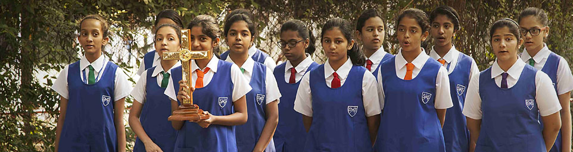
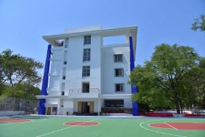
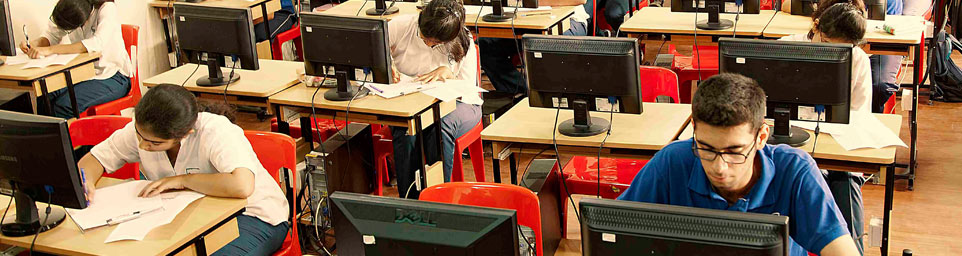
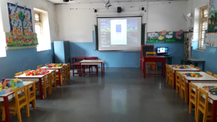

The Marian Gazette
St. Mary's School, Pune · Established 5 November 1866
Under one banner
The school was originally started as an all-girls' school. It now has a separate section for boys and a junior college. All three sections are located within the same campus. The IB Diploma Programme is the newest chapter.
Nursery to Class 10
The Girls' Section represents the unique brand value of St. Mary's School. It symbolizes an institution where a girl child is helped to develop her individuality based on ethical values and culture. The classes in this section extend from Nursery to Class 10.
The Prep Section in which the children are gently nurtured is a haven of learning, sharing and caring. It provides a rich learning environment that kindles the imagination, inspires the intellect and imbibes values in each child.
| Nursery and Prep | Classes 1 to 3 | Classes 4 to 10 |
|---|---|---|
| 8.20 a.m. – 12.15 p.m. | 7.45 a.m. – 2.05 p.m. | 7.45 a.m. to 2.15 p.m. |


Since 1992
The unique factor of our Boys' Section, established in 1992, is that it has only one section per class. This has resulted in a strong bond between students, parents and faculty. Individual attention is given to every child and almost all students are given the opportunity to participate in all activities.
| Preparatory Class | Classes 1 to 3 | Classes 4 to 10 |
|---|---|---|
| 8.20 a.m. to 12.15 p.m. | 7.45 a.m. to 2.05 p.m. | 7.45 a.m. to 2.15 p.m. |
ISC Programme
Empowering Learners. Building Leaders. Enriching Lives. The Junior College was established under the leadership of Mrs. Veena Thadani in 2009. Mrs. Diamay Menzies serves as the current Vice Principal at SMJC, ably mentoring and moulding our students into young adults, ready to serve their community and country.
Welcome to the Indian School Certificate (ISC) Junior College Section at St. Mary's, where academic excellence meets holistic growth. Our ISC curriculum is thoughtfully designed to prepare students not only for outstanding examination results but also for success in higher education and life beyond the classroom.
At SMJC, we believe learning is more than content; it is an evolving journey that nurtures curiosity, character, and confidence. English at the ISC is not just a subject — it is the medium of communication, instruction, and expression. Students are trained in advanced reading, writing, and oratory skills.
To bridge classroom and profession, the Junior College incorporates mandatory summer internships across research laboratories, legal firms, media houses, financial institutions, non-profits, healthcare and entrepreneurial ventures. Service is a core value: students are encouraged to put in a minimum of 4 hours of Community Service every month. Euphoria, the cultural festival, draws participation from across the city.
Timings: 8:45 a.m. to 3:05 p.m.
| Section A | Section B | Section C |
|---|---|---|
| English | English | English |
| Physics / Entrepreneurship | Accountancy / Entrepreneurship | History / Entrepreneurship |
| Chemistry / Economics | Economics / Home Science | Economics / Home Science |
| Mathematics / Physical Education / Psychology / Business Studies | Mathematics / Physical Education / Psychology / Business Studies | Mathematics / Physical Education / Psychology / Business Studies |
| Mass Media & Communication / Computer Science / Biology | Mass Media & Communication / Computer Science / Applied Mathematics | Mass Media & Communication / Computer Science / Applied Mathematics |


IB World School
St. Mary's School, Pune now offers the International Baccalaureate Diploma Programme for Grade 11 and 12. Globally accepted across 75+ countries, the curriculum assesses how students think, not only what they memorise.
Students choose 3 subjects at Higher Level and 3 at Standard Level, plus the IB Core: CAS (Creativity, Activity, Service), the Extended Essay, and Theory of Knowledge. Executive Director and Head of School IBDP, Sujata Mallic Kumar, has said the introduction of the IBDP marks a new chapter in the school's mission to provide a world-class education. Anjali Bhardwaj serves as IBDP Coordinator.
Grade 11 (DP1) applications for 2026–27 are open. Limited seats. Contact ibdp@smspune.in or +91 93094 83852.
Visit the IBDP site